เครื่องมือประเภทประแจ WYNNTOOLS
หมวดที่ใหญ่ที่สุดของแคตตาล็อก มีตั้งแต่ประแจเลื่อน 6 นิ้วถึง 24 นิ้ว ประแจปากตายแหวนข้างครบเบอร์ 8–32 มม. ประแจแหวนฟรี 72 เฟือง ลูกบล็อกสั้น-ยาว 1/2 นิ้ว ไปจนถึงชุดประแจสำเร็จรูปหลายขนาด
เครื่องมือประเภทประแจ — 179 รายการ
ประแจเลื่อน Adjustable Wrenches 24 รายการ
วัสดุ: SK-55 / CR-V / C-ALLOY / เหล็กอัลลอย
| รูป | รหัส | ชื่อสินค้า | ขนาด | จำนวน/ลัง | วัสดุ |
|---|---|---|---|---|---|
 |
WNS250G | ประแจเลื่อนด้ามหุ้ม ปากสลับจับท่อได้Adjustable Wrench ทุกเบอร์ในตระกูลนี้หน้าตาเหมือนกัน ต่างที่ขนาด ปากล่างถอดออกมาสลับด้านได้ เพื่อทำงานจับท่อ |
250mm | 6/60 | เหล็กอัลลอย |
| WNS300G | 300mm | 6/36 | เหล็กอัลลอย | ||
 |
W2914 | ประแจเลื่อนมินิด้ามหุ้มMini Adjustable Wrench | 200mm | 6/60 | C-ALLOY |
 |
WNS150F | ประแจเลื่อนด้ามหุ้มAdjustable Wrench ทุกเบอร์ในตระกูลนี้หน้าตาเหมือนกัน ต่างที่ขนาด |
150mm | 6/120 | C-ALLOY |
| WNS200F | 200mm | 6/60 | C-ALLOY | ||
| WNS250F | 250mm | 6/60 | C-ALLOY | ||
| WNS300F | 300mm | 6/36 | C-ALLOY | ||
| WNS375F | 375mm | 12 | C-ALLOY | ||
 |
WNS250E | ประแจเลื่อนรมดำเงาAdjustable Wrench ทุกเบอร์ในตระกูลนี้หน้าตาเหมือนกัน ต่างที่ขนาด |
250mm | 6/60 | CR-V |
| WNS300E | 300mm | 6/36 | CR-V | ||
| WNS375E | 375mm | 12 | CR-V | ||
 |
WNS150A | ประแจเลื่อนรมดำAdjustable Wrench (Phosphated) ทุกเบอร์ในตระกูลนี้หน้าตาเหมือนกัน ต่างที่ขนาด |
150mm | 6/120 | SK-55 |
| WNS200A | 200mm | 6/60 | SK-55 | ||
| WNS250A | 250mm | 6/60 | SK-55 | ||
| WNS300A | 300mm | 6/36 | SK-55 | ||
| WNS375A | 375mm | 12 | SK-55 | ||
| WNS450A | 450mm | 12 | SK-55 | ||
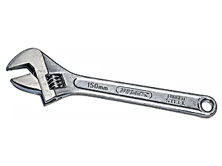 |
WNS150B | ประแจเลื่อน ชุบโครเมี่ยมขาวAdjustable Wrench ทุกเบอร์ในตระกูลนี้หน้าตาเหมือนกัน ต่างที่ขนาด |
150mm | 6/120 | SK-55 |
| WNS200B | 200mm | 6/60 | SK-55 | ||
| WNS250B | 250mm | 6/60 | SK-55 | ||
| WNS300B | 300mm | 6/36 | SK-55 | ||
| WNS375B | 375mm | 12 | SK-55 | ||
| WNS450B | 450mm | 12 | SK-55 | ||
| WNS600B | 600mm | 1/6 | SK-55 |
ประแจเลื่อนรมดำ ตรา M.T.T. Adjustable Wrench (Phosphated) — M.T.T. brand 7 รายการ
วัสดุ: SK-55 เหล็กกล้าคาร์บอนสูง
- ผ่านการรมดำ ปากประแจผ่านการเจียให้เนียน สเกลขัดเงา
| รูป | รหัส | ชื่อสินค้า | ขนาด | วัสดุ |
|---|---|---|---|---|
 |
WM9806 | ประแจเลื่อนรมดำ ตรา M.T.T.Adjustable Wrench (Phosphated) ทุกเบอร์ในตระกูลนี้หน้าตาเหมือนกัน ต่างที่ขนาด |
6" | SK-55 |
| WM9808 | 8" | SK-55 | ||
| WM9810 | 10" | SK-55 | ||
| WM9812 | 12" | SK-55 | ||
| WM9815 | 15" | SK-55 | ||
| WM9818 | 18" | SK-55 | ||
| WM9824 | 24" | SK-55 |
ประแจปากตายแหวนข้าง Combination Wrench 17 รายการ
วัสดุ: CR-V Chromium Vanadium
- เอน 15° เพื่อความสะดวกในการใช้งาน
- ผิวกระจก ขัดผิวเงา กันสนิม
| รูป | รหัส | ชื่อสินค้า | ขนาด | จำนวน/ลัง | วัสดุ |
|---|---|---|---|---|---|
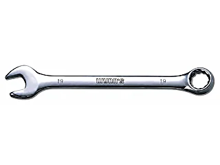 |
W0304A | ประแจปากตายแหวนข้างCombination Wrench ทุกเบอร์ในตระกูลนี้หน้าตาเหมือนกัน ต่างที่ขนาด |
8mm | 12/240 | CR-V |
| W0304C | 10mm | 12/240 | CR-V | ||
| W0304D | 11mm | 12/240 | CR-V | ||
| W0304E | 12mm | 12/120 | CR-V | ||
| W0304F | 13mm | 12/240 | CR-V | ||
| W0304G | 14mm | 12/240 | CR-V | ||
| W0304H | 15mm | 12/180 | CR-V | ||
| W0304I | 16mm | 12/180 | CR-V | ||
| W0304J | 17mm | 12/144 | CR-V | ||
| W0304L | 19mm | 12/144 | CR-V | ||
| W0304N | 21mm | 12/96 | CR-V | ||
| W0304O | 22mm | 12/96 | CR-V | ||
| W0304P | 23mm | 6/72 | CR-V | ||
| W0304Q | 24mm | 6/72 | CR-V | ||
| W0304T | 27mm | 6/48 | CR-V | ||
| W0304U | 30mm | 6/36 | CR-V | ||
| W0304V | 32mm | 6/36 | CR-V |
ประแจแหวนคู่ Double Offset Ring Wrench 9 รายการ
วัสดุ: CR-V
- แหวนทั้งสองข้างเอน 75° เพื่อความสะดวกในการใช้งาน
| รูป | รหัส | ชื่อสินค้า | ขนาด | จำนวน/ลัง | วัสดุ |
|---|---|---|---|---|---|
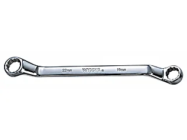 |
W0306A | ประแจแหวนคู่Double Offset Ring Wrench ทุกเบอร์ในตระกูลนี้หน้าตาเหมือนกัน ต่างที่ขนาด |
6X7mm | 12/336 | CR-V |
| W0306C | 8X10mm | 12/336 | CR-V | ||
| W0306F | 10X12mm | 12/240 | CR-V | ||
| W0306H | 12X14mm | 12/216 | CR-V | ||
| W0306I | 13X15mm | 12/144 | CR-V | ||
| W0306J | 14X17mm | 12/144 | CR-V | ||
| W0306L | 17X19mm | 6/72 | CR-V | ||
| W0306M | 19X21mm | 6/72 | CR-V | ||
| W0306U | 30X32mm | 12/36 | CR-V |
ประแจล็อก / ประแจคอพับ / ประแจแหวนผ่า Ratchet, Flexible Socket & Flare Nut Wrenches 14 รายการ
วัสดุ: CR-V 6140
| รูป | รหัส | ชื่อสินค้า | ขนาด | จำนวน/ลัง | วัสดุ |
|---|---|---|---|---|---|
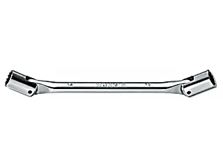 |
WS1001 | ประแจล็อก 2 ข้าง 12 เหลี่ยม คอพับได้Combination Ratchet Wrench ทุกเบอร์ในตระกูลนี้หน้าตาเหมือนกัน ต่างที่ขนาด |
10X11mm | 12/180 | CR-V |
| WS1002 | 12X13mm | 12/144 | CR-V | ||
| WS1003 | 14X15mm | 12/96 | CR-V | ||
| WS1004 | 16X17mm | 12/96 | CR-V | ||
| WS1005 | 18X19mm | 6/72 | CR-V | ||
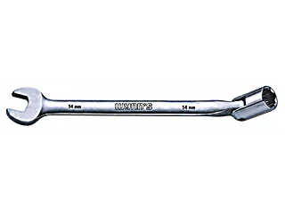 |
W0311A | ประแจปากตาย บล็อกข้าง 12 เหลี่ยม คอพับได้Flexible Combination Socket Wrench ทุกเบอร์ในตระกูลนี้หน้าตาเหมือนกัน ต่างที่ขนาด |
10mm | 10/200 | CR-V |
| W0311C | 12mm | 10/150 | CR-V | ||
| W0311E | 14mm | 10/120 | CR-V | ||
| W0311F | 17mm | 10/120 | CR-V | ||
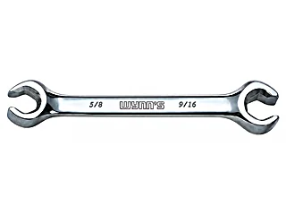 |
W0286B | ประแจแหวนผ่าFlare Nut Wrench ทุกเบอร์ในตระกูลนี้หน้าตาเหมือนกัน ต่างที่ขนาด |
8X10mm | 10/200 | CR-V |
| W0286C | 10X12mm | 10/200 | CR-V | ||
| W0286D | 12X14mm | 10/200 | CR-V | ||
| W0286F | 14X17mm | 10/150 | CR-V | ||
| W0286H | 17X19mm | 6/72 | CR-V |
ประแจบล็อกตัวแอล และประแจแหวนฟรี L-Type & Ratchet Wrenches 21 รายการ
วัสดุ: CR-V 6140
- แหวนฟรี 72 เฟือง เอน 15° ถอด-ขันน็อตได้ง่ายด้วยการหมุนเพียง 5 ครั้งโดยประมาณ
| รูป | รหัส | ชื่อสินค้า | ขนาด | จำนวน/ลัง | วัสดุ |
|---|---|---|---|---|---|
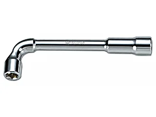 |
WS008C | ประแจบล็อกตัวแอล 6 เหลี่ยมแฉกL-Type Wrench with Hole ทุกเบอร์ในตระกูลนี้หน้าตาเหมือนกัน ต่างที่ขนาด |
8mm | 300 | CR-V |
| WS008E | 10mm | 200 | CR-V | ||
| WS008G | 12mm | 200 | CR-V | ||
| WS008H | 13mm | 150 | CR-V | ||
| WS008I | 14mm | 125 | CR-V | ||
| WS008L | 17mm | 70 | CR-V | ||
| WS008N | 19mm | 80 | CR-V | ||
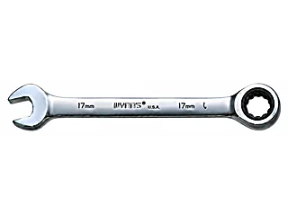 |
W0287A | ประแจแหวนฟรี-ปากตายข้างCombination Ratchet Wrench ทุกเบอร์ในตระกูลนี้หน้าตาเหมือนกัน ต่างที่ขนาด |
8mm | 10/200 | CR-V |
| W0287C | 10mm | 10/200 | CR-V | ||
| W0287E | 12mm | 10/200 | CR-V | ||
| W0287F | 13mm | 10/200 | CR-V | ||
| W0287G | 14mm | 10/150 | CR-V | ||
| W0287J | 17mm | 10/120 | CR-V | ||
| W0287L | 19mm | 10/120 | CR-V | ||
| W0287N | 21mm | 6/72 | CR-V | ||
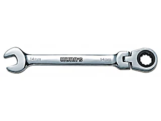 |
W0427A | ประแจแหวนฟรีพับได้-ปากตายข้างCombination Ratchet Wrench (Flexible) ทุกเบอร์ในตระกูลนี้หน้าตาเหมือนกัน ต่างที่ขนาด |
8mm | 10/200 | CR-V |
| W0427C | 10mm | 10/200 | CR-V | ||
| W0427E | 12mm | 10/200 | CR-V | ||
| W0427G | 14mm | 10/150 | CR-V | ||
| W0427J | 17mm | 10/120 | CR-V | ||
| W0427L | 19mm | 10/80 | CR-V |
ชุดประแจ (เซ็ต) Wrench Sets 12 รายการ
วัสดุ: CR-V
| รูป | รหัส | ชื่อสินค้า | ขนาด | วัสดุ |
|---|---|---|---|---|
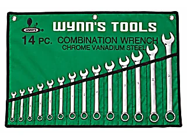 |
W0327B | ชุดประแจปากตาย-แหวนข้าง 11 ชิ้นMirror Surface Combination Wrench Set | 8, 9, 10, 11, 12, 13, 14, 17, 19, 22, 24mm | CR-V |
| W0327D | ชุดประแจปากตาย-แหวนข้าง 14 ชิ้นMirror Surface Combination Wrench Set | 8, 10, 11, 12, 13, 14, 15, 17, 19, 22, 24, 27, 30, 32mm | CR-V | |
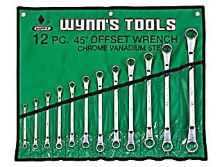 |
W0329A | ชุดประแจแหวนคู่ 8 ชิ้นMirror Surface Offset Wrench Set | 8x10, 9x11, 10x12, 12x14, 14x17, 17x19, 19x21, 22x24mm | CR-V |
| W0329B | ชุดประแจแหวนคู่ 12 ชิ้นMirror Surface Offset Wrench Set | 6x7, 8x10, 9x11, 12x14, 13x15, 14x17, 16x18, 17x19, 19x21, 22x24, 24x27, 30x32mm | CR-V | |
| ปากตาย8-24ด้าน | ชุดประแจแหวนข้าง ชุบโครเมียม 14 ชิ้นOpen End Wrench Set | 8, 9, 10, 11, 12, 13, 14, 15, 16, 17, 19, 21, 22, 24mm | CR-V | |
| แหวน8-27ด้าน | ชุดประแจแหวนคู่ ชุบโครเมียม 9 ชิ้นOffset Wrench Set | 8x9, 10x11, 12x13, 14x15, 16x17, 18x19, 20x22, 21x23, 24x27mm | CR-V | |
| แหวน6-32ด้าน | ชุดประแจแหวนคู่ ชุบโครเมียม 12 ชิ้นOffset Wrench Set | 6x7, 8x9, 10x11, 12x13, 14x15, 16x17, 18x19, 20x22, 21x23, 24x27, 25x28, 30x32mm | CR-V | |
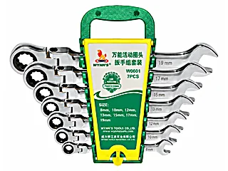 |
W0601 | ชุดประแจแหวนฟรีพับ-ปากตาย 7 ชิ้นMirror Surface Open End Spanner Set | 10, 12, 13, 14, 15, 17, 19mm | CR-V |
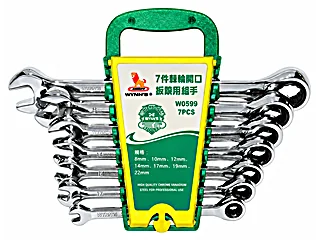 |
W0599 | ชุดประแจแหวนฟรี-ปากตาย 7 ชิ้นMirror Surface Open End Spanner Set | 8, 10, 12, 13, 14, 17, 19mm | CR-V |
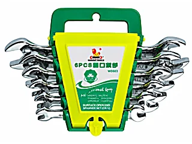 |
W0603 | ชุดประแจปากตาย 6 ชิ้นMirror Surface Open End Spanner Set | 6x7, 8x10, 10x12, 12x14, 14x17, 17x19mm | CR-V |
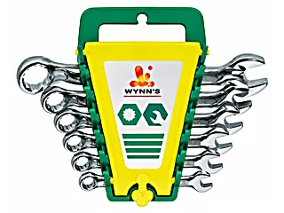 |
W0602 | ชุดประแจปากตายแหวนข้าง 6 ชิ้นMirror Surface Combination Spanner Set | 8, 10, 12, 13, 14, 17mm | CR-V |
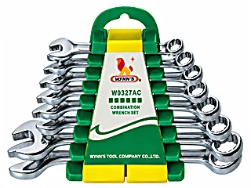 |
W0327AC | ชุดประแจปากตายแหวนข้าง 8 ชิ้นMirror Surface Combination Spanner Set | 8, 10, 11, 12, 13, 14, 17, 19mm | CR-V |
ลูกบล็อก และประแจเลื่อนคอม้า Sockets & Large-Opening Wrench 23 รายการ
วัสดุ: CR-V 50BV30
- ผิวพ่นทราย กันสนิมกันการกัดกร่อน
- มุมภายในของส่วนโค้งเป็นพิเศษ ช่วยเพิ่มแรงหมุน 30% และลดการสึกหรอของหัวน็อต
| รูป | รหัส | ชื่อสินค้า | ขนาด | จำนวน/ลัง | วัสดุ |
|---|---|---|---|---|---|
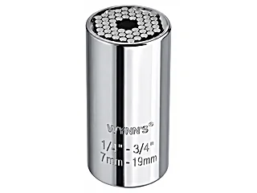 |
W0560U | ลูกบล็อกหัวหกเหลี่ยม ครอบจักรวาล (แกน 3/8 นิ้ว)Universal Impact Socket | 3/8 (7–19mm) | 12/144 | CR-V |
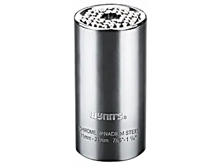 |
W0560V | ลูกบล็อกหัวหกเหลี่ยม ครอบจักรวาล (แกน 1/2 นิ้ว)Universal Impact Socket | 1/2 (11–32mm) | 5/60 | CR-V |
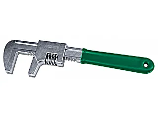 |
WNS300J | ประแจเลื่อนคอม้าLarge Opening Multi-Purpose Adjustable Wrench | 300mm | 6/36 | CR-V |
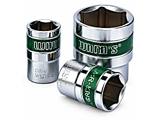 |
WS005A | ลูกบล็อกสั้น 6 เหลี่ยม 1/2 นิ้ว (4 หุน)1/2" Socket ทุกเบอร์ในตระกูลนี้หน้าตาเหมือนกัน ต่างที่ขนาด |
8mm | 12/240 | CR-V |
| WS005C | 10mm | 12/240 | CR-V | ||
| WS005E | 12mm | 12/240 | CR-V | ||
| WS005F | 13mm | 12/240 | CR-V | ||
| WS005G | 14mm | 12/240 | CR-V | ||
| WS005H | 15mm | 12/240 | CR-V | ||
| WS005J | 17mm | 12/240 | CR-V | ||
| WS005L | 19mm | 12/180 | CR-V | ||
| WS005N | 21mm | 12/180 | CR-V | ||
| WS005P | 23mm | 12/180 | CR-V | ||
| WS005Q | 24mm | 12/180 | CR-V | ||
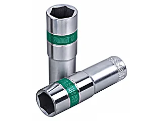 |
WS007A | ลูกบล็อกยาว 6 เหลี่ยม 1/2 นิ้ว (4 หุน)1/2" Extra Deep Socket | 8mm | 12/144 | CR-V |
| WS007C | ลูกบล็อกยาว 6 เหลี่ยม 1/2 นิ้ว (4 หุน)1/2" Extra Deep Socket | 10mm | 12/144 | CR-V | |
| WS007E | ลูกบล็อกยาว 6 เหลี่ยม 1/2 นิ้ว (4 หุน)1/2" Extra Deep Socket | 12mm | 12/144 | CR-V | |
| WS007F | ลูกบล็อกยาว 6 เหลี่ยม 1/2 นิ้ว (4 หุน)1/2" Extra Deep Socket | 13mm | 12/144 | CR-V | |
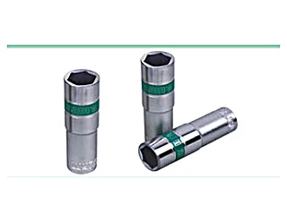 |
WS007G | ลูกบล็อกยาว 6 เหลี่ยม 1/2 นิ้ว (4 หุน)1/2" Extra Deep Socket | 14mm | 12/144 | CR-V |
| WS007I | ลูกบล็อกยาว 6 เหลี่ยม 1/2 นิ้ว (4 หุน)1/2" Extra Deep Socket | 16mm | 12/144 | CR-V | |
| WS007J | ลูกบล็อกยาว 6 เหลี่ยม 1/2 นิ้ว (4 หุน)1/2" Extra Deep Socket | 17mm | 12/120 | CR-V | |
| WS007L | ลูกบล็อกยาว 6 เหลี่ยม 1/2 นิ้ว (4 หุน)1/2" Extra Deep Socket | 19mm | 12/120 | CR-V | |
| WS007N | ลูกบล็อกยาว 6 เหลี่ยม 1/2 นิ้ว (4 หุน)1/2" Extra Deep Socket | 21mm | 12/120 | CR-V |
ด้ามบล็อกฟรี และประแจหางหนู Ratchet Handles & Scaffold Wrenches 15 รายการ
วัสดุ: CR-V 6140 / CR-MO
| รูป | รหัส | ชื่อสินค้า | ขนาด | จำนวน/ลัง | วัสดุ |
|---|---|---|---|---|---|
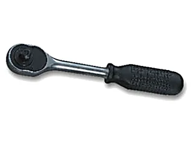 |
W0013A | ด้ามบล็อกฟรี 1/2"Quick Release Ratchet Wrench เฟือง 24 ฟัน กะทัดรัด ทำงานในที่แคบได้ · ปรับหมุนซ้าย-ขวาได้ |
1/2"X20mm | 6/36 | CR-V |
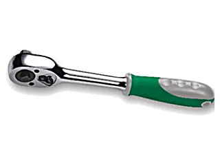 |
WS0416 | ด้ามบล็อกฟรี 1/2" ด้ามจับสองสีOval Type Ratchet Wrench | 1/2"X20mm | 6/36 | CR-MO 42 Chromium Molybdenum |
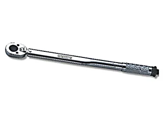 |
W0367 | ด้ามบล็อกฟรี 1/2" 24 เฟืองRatchet Torque Wrench | 1/2"X20kg | 4 | CR-V |
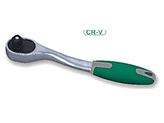 |
W2595C | ด้ามบล็อกฟรี 1/2" (ด้ามโค้ง)Ratchet with Bend Handle | 1/2" | 6/36 | CR-V 6140 |
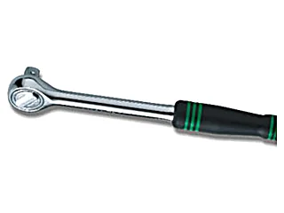 |
W0175 | ด้ามบล็อกฟรี 1/2"1/2" Oval Type Ratchet Wrench | 1/2"X16mm | 6/36 | CR-V |
| ด้ามบล็อก18นิ้ว | ด้ามบล็อกยาว 1/2" 18 นิ้วRatchet Wrench ปรับหัวไปทางซ้าย-ขวาได้ 180 องศา |
4 หุน ด้ามยาว 18 นิ้ว | CR-V 6140 | ||
| ด้ามบล็อก24นิ้ว | ด้ามบล็อกยาว 1/2" 24 นิ้วRatchet Wrench | 4 หุน ด้ามยาว 24 นิ้ว | CR-V 6140 | ||
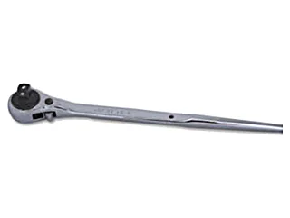 |
W2837 | ประแจบล็อกฟรี หางหนู 1/2"Ratchet Wrench | 1/2"/12.5mm | 10/40 | CR-V 6140 |
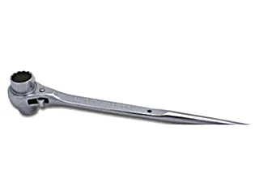 |
W2838C | ประแจหางหนูRatchet Wrench ทุกเบอร์ในตระกูลนี้หน้าตาเหมือนกัน ต่างที่ขนาด |
14X17mm | 2/40 | CR-V 6140 |
| W2838E | 17X19mm | 2/40 | CR-V 6140 | ||
| W2838F | 19X21mm | 2/40 | CR-V 6140 | ||
| W2838H | 22X24mm | 2/32 | CR-V 6140 | ||
| W2838I | 24X27mm | 2/32 | CR-V 6140 | ||
| W2838J | 27X30mm | 2/20 | CR-V 6140 | ||
| W2838K | 30X32mm | 2/24 | CR-V 6140 |
ด้ามบล็อก ข้อต่อ และประแจหกเหลี่ยม Handles, Extensions, Joints & Hex Keys 14 รายการ
วัสดุ: CR-V 50BV30 / CR-V 6140
| รูป | รหัส | ชื่อสินค้า | ขนาด | จำนวน/ลัง | วัสดุ |
|---|---|---|---|---|---|
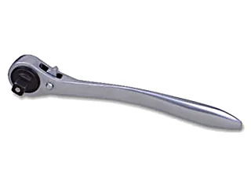 |
W4567 | ประแจบล็อคฟรี หางหนู1/2" Rapid Ratchet Wrench | 1/2" | 6/36 | CR-V 6140 |
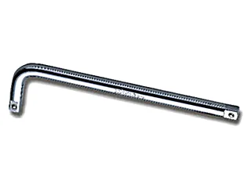 |
W0293 | ด้ามบล็อกตัว L 1/2"1/2" L-Type Handle | 1/2"X250mm | 12/48 | CR-V 50BV30 |
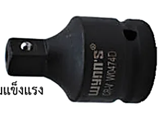 |
W0474D | ข้อลดบล็อก 3/4" ไป 1/2"Impact Universal Joint ผิวรมดำแบบ Phosphating กันการสึกกร่อน |
3/4" ลด 1/2" | 1/100 | CR-V |
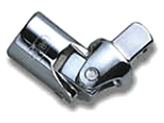 |
W0297 | ข้ออ่อนบล็อก 1/2"1/2" Universal Joint | 1/2" | 20/120 | CR-V 50BV30 |
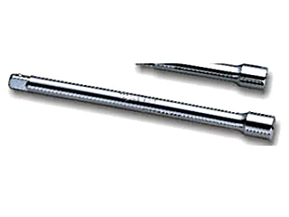 |
W0295 | ข้อต่อบล็อก 1/2"1/2" Extension Bar ทุกเบอร์ในตระกูลนี้หน้าตาเหมือนกัน ต่างที่ขนาด |
1/2"X250mm | 12/72 | CR-V 50BV30 |
| W0296 | 1/2"X125mm | 24/96 | CR-V 50BV30 | ||
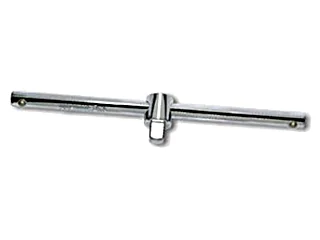 |
W0294 | ด้ามเลื่อนตัว TSliding T-Bar | 1/2"X250mm | 12/48 | CR-V 50BV30 |
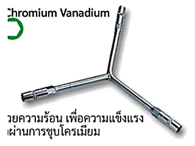 |
W0361A | ประแจตัว Y หกเหลี่ยมY-Type Wrench ทุกเบอร์ในตระกูลนี้หน้าตาเหมือนกัน ต่างที่ขนาด |
8X10X12mm | 10/60 | CR-V 6140 |
| W0361B | 10X12X14mm | 10/60 | CR-V 6140 | ||
| W0361C | 12X14X17mm | 10/60 | CR-V 6140 | ||
| W0361D | 14X17X19mm | 10/60 | CR-V 6140 | ||
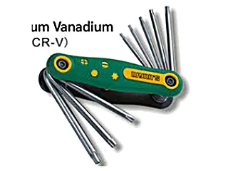 |
W0173A | ประแจพับหกเหลี่ยมทอร์ค 8 ตัวชุด8pcs Folding Box End Hex Wrench | T9 T10 T15 T20 T25 T27 T30 T40 | 12/120 | CR-V 6140 |
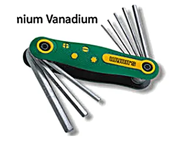 |
W0174A | ประแจพับหกเหลี่ยม 8 ตัวชุด8pcs Single Folding Hex Key | 1.5, 2, 2.5, 3, 4, 5, 6, 8mm | 12/120 | CR-V 6140 |
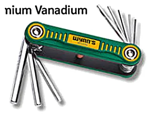 |
W0409 | ประแจพับหกเหลี่ยม เล็ก 8 ตัวชุด8pcs Folding Hex Key | 1.27, 1.5, 2.0, 2.5, 3.0, 4.0, 5.0, 6.0mm | 15/180 | CR-V 6140 |
ประแจแอลหกเหลี่ยม / ทอร์ค (ชุด) Hex & Torx Key Sets 15 รายการ
วัสดุ: CR-V 6150 / S-2 / SK-45
| รูป | รหัส | ชื่อสินค้า | ขนาด | จำนวน/ลัง | วัสดุ |
|---|---|---|---|---|---|
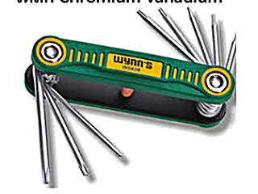 |
W0408 | ประแจพับหกเหลี่ยมทอร์ค เล็ก 8 ตัวชุด8pcs Folding Box End Hex Key | T5 T6 T7 T8 T9 T10 T15 T20 | 15/180 | CR-V 6140 |
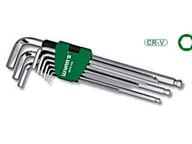 |
W9918A | ประแจแอลหกเหลี่ยมหัวบอล ยาวพิเศษ 9 ตัวชุด9pcs Extralong Ball Point Hex Key Set | 1.5, 2, 2.5, 3, 4, 5, 6, 8, 10mm | 6/48 | CR-V 6150 |
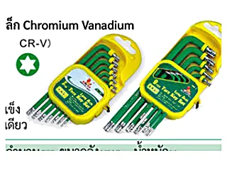 |
W0553 | ประแจแอลหัวทอร์ค มีรู 9 ตัวชุดLong Arm Torx Key Set | T12 T15 T20 T25 T27 T30 T40 T45 T50 | 10/60 | CR-V 6150 |
| W0554 | ประแจแอลหัวทอร์ค มีรู 7 ตัวชุดLong Arm Torx Key Set | T9 T10 T15 T20 T25 T27 T30 | 10/60 | CR-V 6150 | |
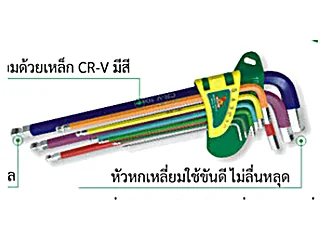 |
W9921A | ประแจแอลหัวหกเหลี่ยมหัวบอล หลายสี 9 ตัวชุด9pcs Extra Long Arm Ball Point Hex Key Set หัวบอลเอียง 25 องศา สะดวกเมื่อใช้เข้าไปในจุดที่ไขยาก · มี 9 สี |
1.5, 2, 2.5, 3, 4, 5, 6, 8, 10mm | 6/48 | CR-V |
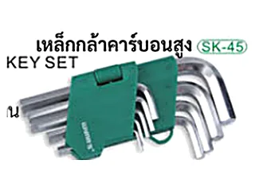 |
W9925 | ประแจแอลหัวหกเหลี่ยม ด้ามสั้น 9 ตัวชุด9pcs Metric Flat End Hex Key Set ชุบโครเมี่ยมกันสนิม กันกัดกร่อน |
1.5, 2, 2.5, 3, 4, 5, 6, 8, 10mm | SK-45 | |
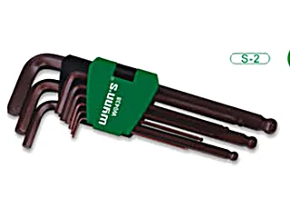 |
W0439 | ประแจแอลหกเหลี่ยมหัวบอล ยาวพิเศษ 9 ตัวชุด9pcs Extralong Ball Point Hex Key Set ความแข็ง HRC58-60 |
1.5, 2, 2.5, 3, 4, 5, 6, 8, 10mm | 6/48 | S-2 |
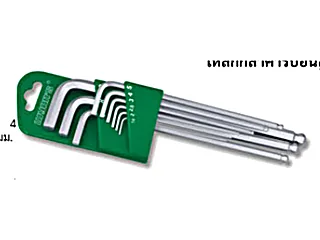 |
W0199A | ประแจแอลหกเหลี่ยมหัวบอล ยาวพิเศษ 9 ตัวชุด9pcs Extralong Ball Point Hex Key Set ผิวเคลือบนิกเกิล |
1.5, 2, 2.5, 3, 4, 5, 6, 8, 10mm | 12/48 | SK-45 |
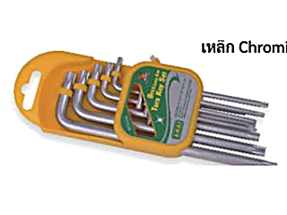 |
W9912A | ประแจแอล หัวทอร์คมีรู 9 ตัวชุด (ยาวพิเศษ)9pcs Box End Hex Key Set | T10 T15 T20 T25 T27 T30 T40 T45 T50 | 10/60 | CR-V 6150 |
| W9912B | ประแจแอล หัวทอร์คมีรู 9 ตัวชุด (ยาวปกติ)9pcs Box End Hex Key Set | T10 T15 T20 T25 T27 T30 T40 T45 T50 | 10/60 | CR-V 6150 | |
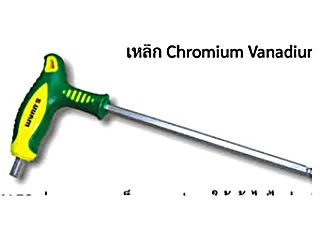 |
W2758B | ประแจแอลหกเหลี่ยมหัวบอล ด้ามจับยางT-Type Single Hex Key ทุกเบอร์ในตระกูลนี้หน้าตาเหมือนกัน ต่างที่ขนาด |
2.5mm | 12/288 | CR-V 6150 |
| W2758C | 3mm | 12/288 | CR-V 6150 | ||
| W2758D | 4mm | 12/288 | CR-V 6150 | ||
| W2758E | 5mm | 12/192 | CR-V 6150 | ||
| W2758F | 6mm | 12/192 | CR-V 6150 |
ประแจตัว T ชุดบล็อก และชุดดอกไขควง T-Type Wrenches, Socket & Bit Sets 8 รายการ
วัสดุ: CR-V / เหล็กอัลลอย
| รูป | รหัส | ชื่อสินค้า | ขนาด | จำนวน/ลัง | วัสดุ |
|---|---|---|---|---|---|
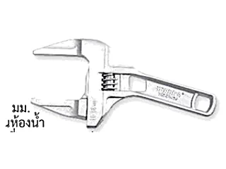 |
WNS200J | ประแจเลื่อนด้ามสั้นSanitary Adjustable Wrench เหมาะกับงานอุปกรณ์ในห้องน้ำ ไม่ทำให้ผิวชิ้นงานเป็นรอย เช่น น็อตเคลือบสีทอง |
200mm (ปากอ้า 16-68 มม.) | ||
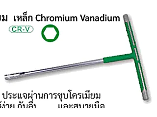 |
W0172 | ประแจตัว T หุ้ม หกเหลี่ยมT-Type Wrench | A8mm B9mm C10mm E12mm G14mm | 10/60 | CR-V |
| T-SOHENG | ตัว T หกเหลี่ยม SOHENGT-Type Wrench | 8, 10, 12, 14mm | 5 | CR-V | |
| W0619C | บล็อกยิงหลังคา (ชุดดอกไขควง 5 ตัว)5pcs Screw Driver Bits Set ทุกเบอร์ในตระกูลนี้หน้าตาเหมือนกัน ต่างที่ขนาด มีแม่เหล็กติดตั้งพร้อมภายใน |
10mm (ยาว 65mm) | 5/500 | เหล็กอัลลอย | |
| W0619B | 8mm (ยาว 65mm) | 5/500 | เหล็กอัลลอย | ||
| W3490B | ชุดดอกไขควง-บล็อก สำหรับสว่าน 40 ชิ้น40pcs Bits Set | ลูกบล็อก 1/2, 3/4 นิ้ว · 30L: H-4-5-6-7-8-10-12, M5-6-8-10-12, T20-25-30-40-45-50-55 · 75L: เหมือนกัน | 10 | CR-V | |
| ปากตาย8-24MTT | ประแจแหวนข้าง ตรา M.T.T. 14 ชิ้นOpen End Wrench Set เอน 15° ผิวกระจก ชุบโครเมี่ยม กันสนิม |
8, 9, 10, 11, 12, 13, 14, 15, 16, 17, 19, 21, 22, 24mm | Drop-forged alloy | ||
| ชุดบล็อกซ์46 | ชุดบ็อกซ์ 1/4" (2 หุน) 46 ชิ้น46pcs 1/4" Dr. Socket Wrench Set | ลูกบล็อก 13 ตัว (4-14mm) · กุญแจหกเหลี่ยม 4 ตัว · ด้ามต่อ/ข้อต่อ/ด้ามฟรี/ด้ามเลื่อน · หัวใส่ด้ามบล็อก 2 หุน แฉกฟิลลิป 3 · แฉกดาว 3 · หกเหลี่ยม 6 · ทอร์ค 6 · แบน 3 | CR-V |
เจอรหัสที่ต้องการแล้ว? กดที่รหัสเพื่อถามราคา
กดที่รหัสสินค้าในตาราง ระบบจะเปิด LINE พร้อมข้อความให้แล้ว หรือทักมาบอกรายการที่ต้องการก็ได้ ทีมงานเช็คสต็อกและแจ้งราคาส่งให้